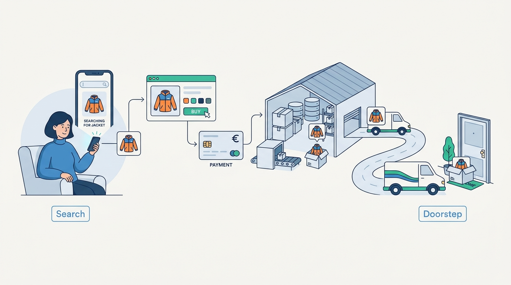

Part IX — JOURNEYS: One Order, End to End
Journey 1: Eva's Jacket, From Search to Doorstep
AI-assisted: researched and written with Claude Code and Codex; illustrations generated with Gemini and OpenAI image tools. How this works

Part IX — JOURNEYS: One Order, End to End
AI-assisted: researched and written with Claude Code and Codex; illustrations generated with Gemini and OpenAI image tools. How this works
